Jste zde: Žonglování » Informace o žonglování » Literatura
Literatura o žonglování
Žonglérův slabikář
 PDF verze žonglérova slabikáře. Vhodné pro oboustranný tisk. 151 stránek.
PDF verze žonglérova slabikáře. Vhodné pro oboustranný tisk. 151 stránek.
Žonglovanie pre samoukov
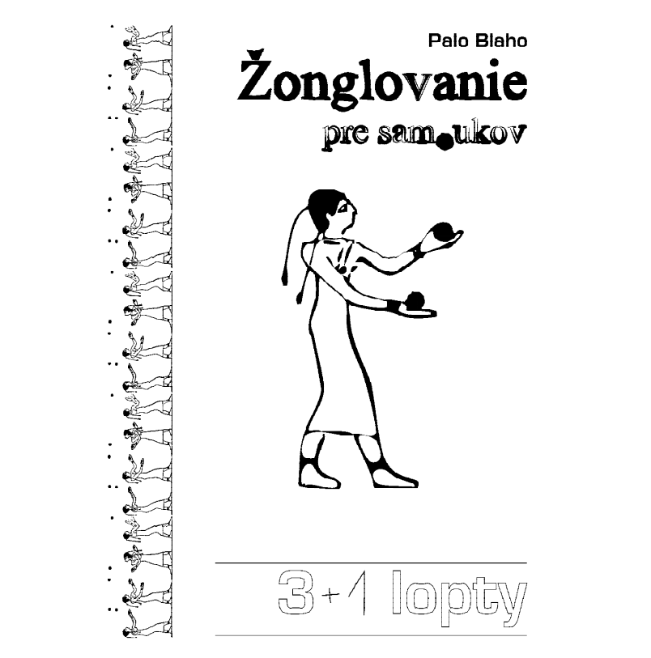 Základní příručka každého žongléra. Napsal Palo Blaho. Slovensky, 22 stránek.
Žonglérská víkendovka
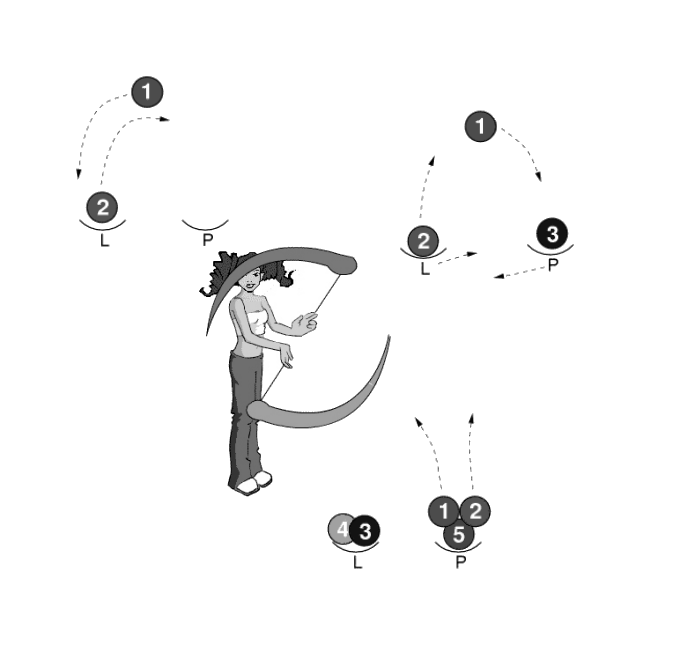 Brožura pro výuku žonglování na víkendových kurzech. Popisuje základy žonglování s míčky a točení s poi. Sestavil Martin Perlík. 16 stránek.
Poi
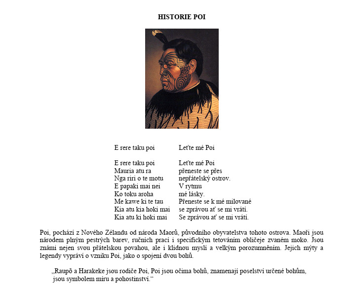 Knížka o točení s poi od Richeeho. 86 stránek.
The Encyclopaedia of Ball Juggling
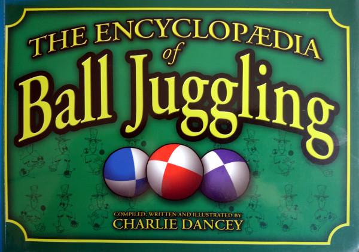 Výborná knížka o žonglování s míčky od Carlieho Dancey. Obsahuje spoustu pěkných obrázků, díky tomu nemusíš ani umět anglicky, a přesto téměř vše pochopíš. Je vhodná pro začátečníky i pokročilé. 216 stránek.
Compendium of Club Juggling
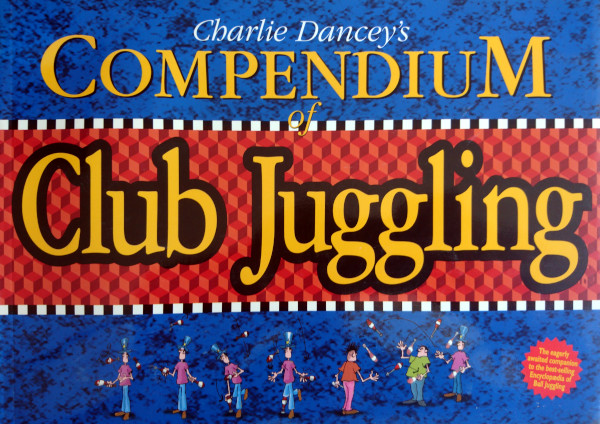 Napsal Charlie Dancey. V této knížce je vše o žonglování s kužely. Obsahuje spoustu pěkných obrázků, díky tomu nemusíš ani umět anglicky, a přesto téměř vše pochopíš. Vhodné pro začátečníky i pokročilé. 238 stránek.
Every trick in the book
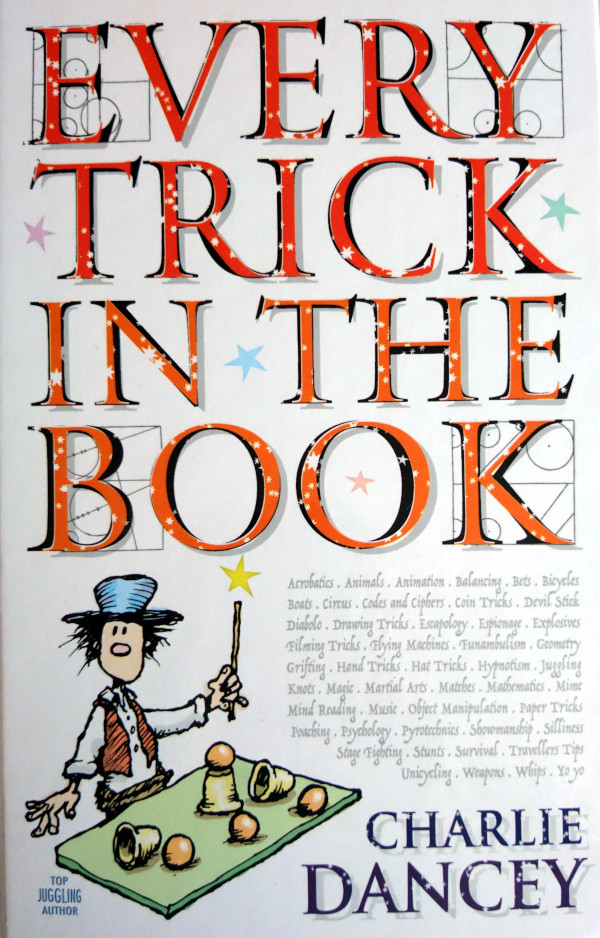 Napsal Charlie Dancey. V této knížce je vše o žonglování s kužely, míčky a spousta dalších triků. Obsahuje spoustu pěkných obrázků, díky tomu nemusíš ani umět anglicky, a přesto téměř vše pochopíš. 749 stránek.
Addicted to ball and club juggling
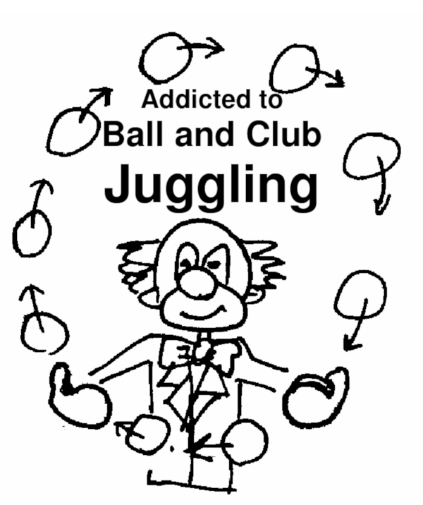 Anglická knížka, kterou sepsal Hans Vanwynsberghe. Nedokončená, ale i přesto výborná. 235 stránek.
Juggling in your Right Mind
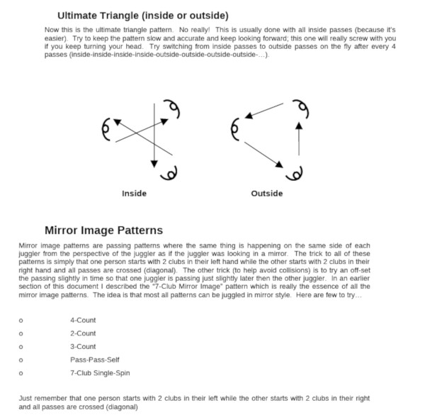 Návody na passování, které sepsal Lee Kolinsky. 18 stránek.
The New Highgate Collection
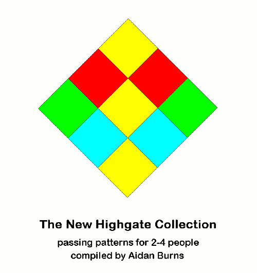 Návody na passování pro dva až čtyři lidi od Aidana Burnse. 246 stránek.
How to steal from your friends
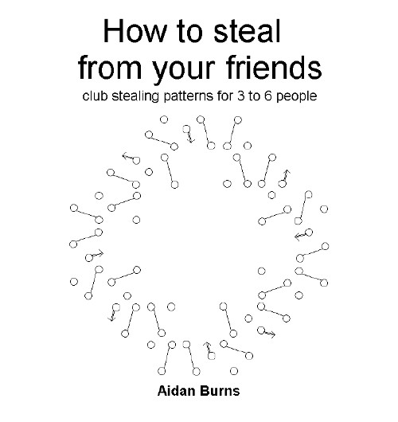 Návody na přebírání kuželů pro tři až šest lidí od Aidana Burnse. 24 stránek.
Passing patterns compendium
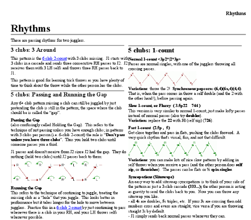 Návody na passování s kužely. 94 stránek.
Will patterns
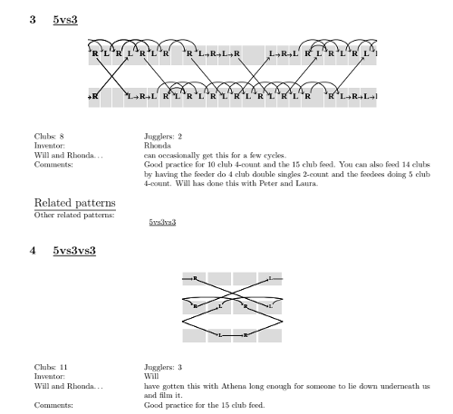 Návody na passování s kužely které sepsal Will Murray. 77 stránek.
Madison area
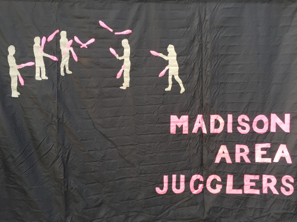 Návody na passování s kužely od Madison area jugglers. 173 stránek.